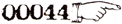

- I -
1. Before the beginning was the Nonexistent Chao, balanced in Oblivion by the Perfect Counterpushpull of the Hodge and the Podge.
2. Whereupon, by an Act of Happenstance, the Hodge began gradually to overpower the Podge -- and the Primal Chaos thereby came to be.
3. So in the beginning was the Primal Chaos, balanced on the Edge of Oblivion by the Perfect Counterpullpush of the Podge and the Hodge.
4. Whereupon, by the Law of Negative Reversal,** the Podge swiftly underpowered the Hodge and Everything broke loose.
5. And therein emerged the Active Force of Discord, the Subtle Manifestation of the Nonexistent Chao, to guide Everything along the Path back to Oblivion - that it might not become lost among Precepts of Order in the Region of Thud.
6. Forasmuch as it was Active, the Force of Discord entered the State of Confusion, wherein It copulated with the Queen and begat ERIS, Our Lady of Discord and Gross Manifestation of the Nonexistent Chao.
7. And under Eris Confusion became established, and was hence called Bureaucracy; while over Bureaucracy Eris became established, and was hence called Discordia.
8. By the by it came to pass that the Establishment of Bureaucracy perished in a paper shortage.
9. Thus it was, in accord with the Law of Laws.

|